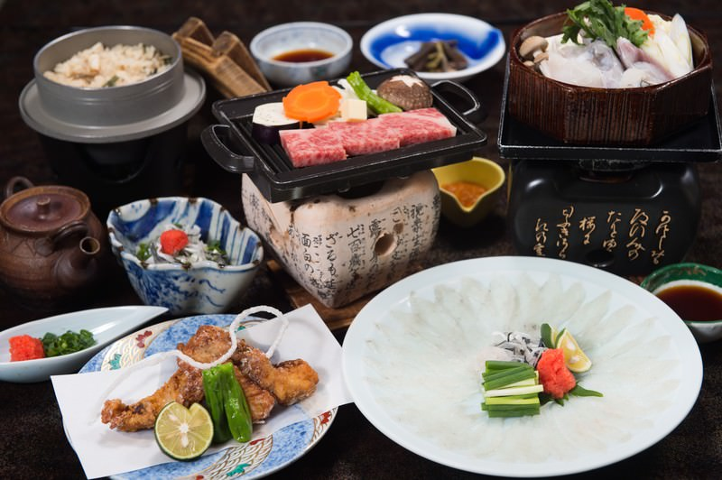

今期のお品書き

四季折々の食材をふんだんに使用した懐石料理は、前菜の煮物椀やお浸し、透明感のあるフグの薄造り、柔らかくジューシーな和牛ステーキ、サクサクの天ぷら、滑らかな舌触りの茶碗蒸し、体を温める鍋料理、香り豊かな炊き込みご飯、新鮮な季節の果物といった一品一品が揃い、見た目の美しさと味わいを最大限に引き出し、日本の四季を感じながら心温まるひとときを楽しむことができます。
四季折々の食材をふんだんに使用した懐石料理は、前菜の煮物椀やお浸し、透明感のあるフグの薄造り、柔らかくジューシーな和牛ステーキ、サクサクの天ぷら、滑らかな舌触りの茶碗蒸し、体を温める鍋料理、香り豊かな炊き込みご飯、新鮮な季節の果物といった一品一品が揃い、見た目の美しさと味わいを最大限に引き出し、日本の四季を感じながら心温まるひとときを楽しむことができます。